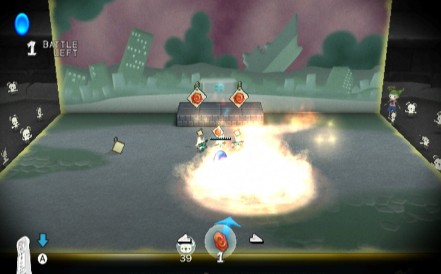

12 |
Objets et unités spéciales |
 |
|

Pour protéger les joyaux, vous allez devoir utiliser des objets et des unités spéciales en plus de vos ours de base.
Obtenir des objets et des unités spéciales
Utiliser les objets et les unités spéciales
Types d'objets et d'unités spéciales
Marque-pages : les trois types de marque-pages, Blazing (embrasé), Torrential (torrentiel) et Glacial, peuvent respectivement brûler, inonder ou geler la page entière.

Grenouilles : elles envoient de l'eau sur les ennemis à distance.

Mini-ours : pas aussi forts que les ours normaux, mais ils compensent ce défaut par leur nombre.

Lanternes : elles enflamment les unités à proximité et peuvent déclencher les bombes.

Pingouins : ils peuvent geler les ennemis à proximité. |
 Sorts : certains sont liés à un élément, comme le feu, l'eau ou la glace, tandis que d'autres peuvent renforcer vos unités. Les sorts de feu sont capables de tout brûler dans une zone donnée. Les sorts d'eau peuvent ralentir les abominours ou éteindre les ennemis de feu. Les sorts de glace gèlent quant à eux la zone visée. La magie élémentale est très pratique, mais attention : les ours alentour subiront aussi ses effets ! Vous pouvez utiliser les Powerballs (orbes de force) pour augmenter la force de tous les ours alliés présents dans la zone d’effet.
Sorts : certains sont liés à un élément, comme le feu, l'eau ou la glace, tandis que d'autres peuvent renforcer vos unités. Les sorts de feu sont capables de tout brûler dans une zone donnée. Les sorts d'eau peuvent ralentir les abominours ou éteindre les ennemis de feu. Les sorts de glace gèlent quant à eux la zone visée. La magie élémentale est très pratique, mais attention : les ours alentour subiront aussi ses effets ! Vous pouvez utiliser les Powerballs (orbes de force) pour augmenter la force de tous les ours alliés présents dans la zone d’effet. |
 |
 |